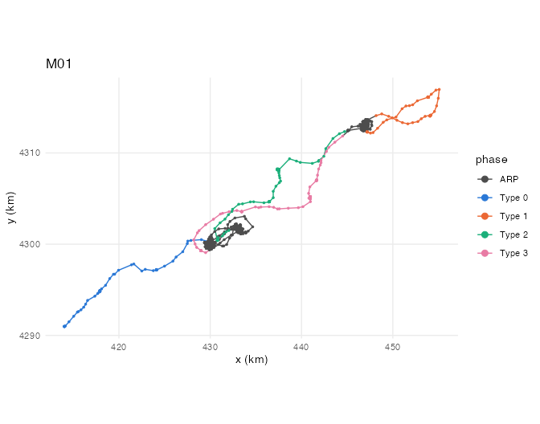
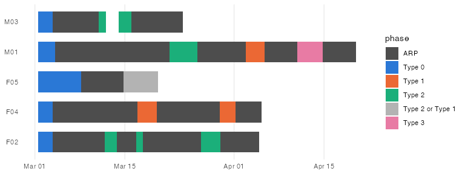

disperseR segments animal movement trajectories into movement phases, with a focus on long-range movements. It separates area-restricted phases (ARP), where the animal stays in a limited area, from the movements between them, and classifies each movement according to the network of areas the individual has already visited:
| Phase | Meaning |
|---|---|
| ARP | Area-restricted phase: the animal remains in a limited area (home range, settlement area, long stop). |
| Type 0 | Unanchored movement: before the first ARP (e.g. after release or leaving the natal area). |
| Type 1 | Loop: the animal leaves an ARP and returns to the same one. |
| Type 2 | Expansion: the animal reaches a new ARP, not visited before. |
| Type 3 | Internal transit: the animal moves to a different ARP that it had already visited. |
| Type 2 or Type 1 | The track ends while the animal is moving, so the movement cannot be classified. |
At fine temporal resolution, hidden Markov models (HMM) mostly describe activity modes (resting, moving), and a dispersing or migrating animal also rests every day. disperseR uses the HMM states only as a first step and identifies phases from space use over several days, with density-based clustering (DBSCAN).
Installation
Once on CRAN:
install.packages("disperseR")Development version from GitHub:
# install.packages("remotes")
remotes::install_github("cherraiz/disperseR")From a local copy of the source:
install.packages("path/to/disperseR", repos = NULL, type = "source")Workflow
| Step | Function |
|---|---|
| Split tracks at long monitoring gaps | divide.track.by.gap() |
Regularise locations with continuous-time movement models (ctmm) |
resample.ctmm() |
Fit hidden Markov models (momentuHMM) |
fitHMM.wrap(), draw.step.densities()
|
| Choose the clustering distance | get.epsilon() |
| Identify ARPs with DBSCAN | get.arp() |
| Link ARPs visited at different times |
link.arp(), draw.linked.clusters()
|
| Classify movement phases | class.mov() |
| Summarise and plot |
phase.summary(), draw.track(), draw.timeline()
|
| Transfer phases back to the original locations | transfer.disperseR() |
Example
The package includes simulated data for five dispersing individuals: sim_tracks (raw locations) and sim_states (regular locations with HMM states).
library(disperseR)
eps <- get.epsilon(sim_states)
arp <- get.arp(sim_states, epsilon = eps, delta.days = 2, pct.state1 = 0.2)
mov <- class.mov(link.arp(arp, thres = 24 * 3600))
mov
#> <disperseR object>
#> Individuals: 5 | Locations: 3788
#> Steps: ARP clusters (get.arp), Linked ARPs (link.arp), Movement phases (class.mov)
#> ARP clusters per individual:
#> F02 F04 F05 M01 M03
#> 4 2 1 4 2
#> Locations per phase:
#> ARP Type 0 Type 1 Type 2 Type 2 or Type 1 Type 3
#> F02 629 55 0 142 0 0
#> F04 649 54 130 0 0 0
#> F05 159 161 0 0 129 0
#> M01 854 63 72 103 0 95
#> M03 364 55 0 74 0 0
draw.track(mov, colour.col = "phase", ids = "M01", colour.path = TRUE, km = TRUE)
draw.timeline(mov)
ph <- phase.summary(mov)
head(ph[, c("ID", "phase", "from", "to", "duration_days", "distance_km")])The vignette describes the whole workflow and, above all, how the choice of each argument changes the classification:
vignette("disperseR")